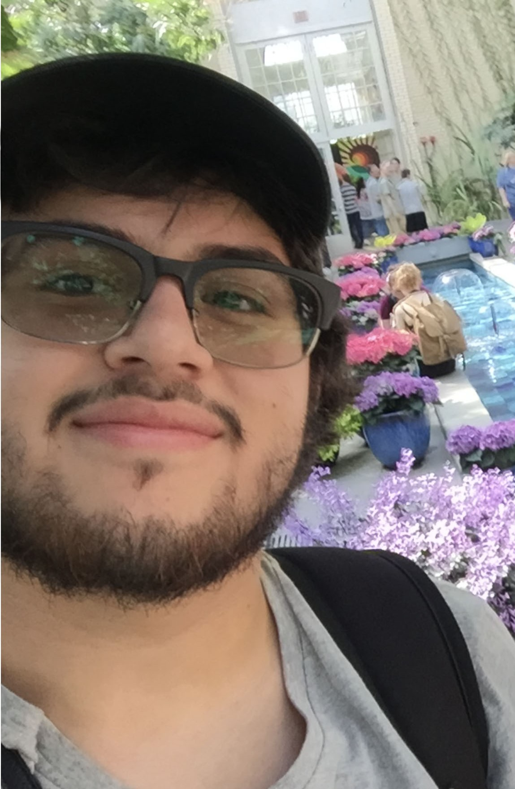

About Me
Welcome, my name is Marc Anthony Cuellar. Born and raised in the great state of Virginia. Graduated from Jeb Stuart High School. After graduation, I received my certificate of general studies from Northern Virginia Community College.
Now attending George Mason is studying Graphic Design. Pursing my desire of art, I’ve been learning to improve my skills with art.
Having art pieces made with charcoal and paint, I work with portraits, abstract work and of individuals.
Now including digital work of logos and abstract posters. I enjoy creating art.